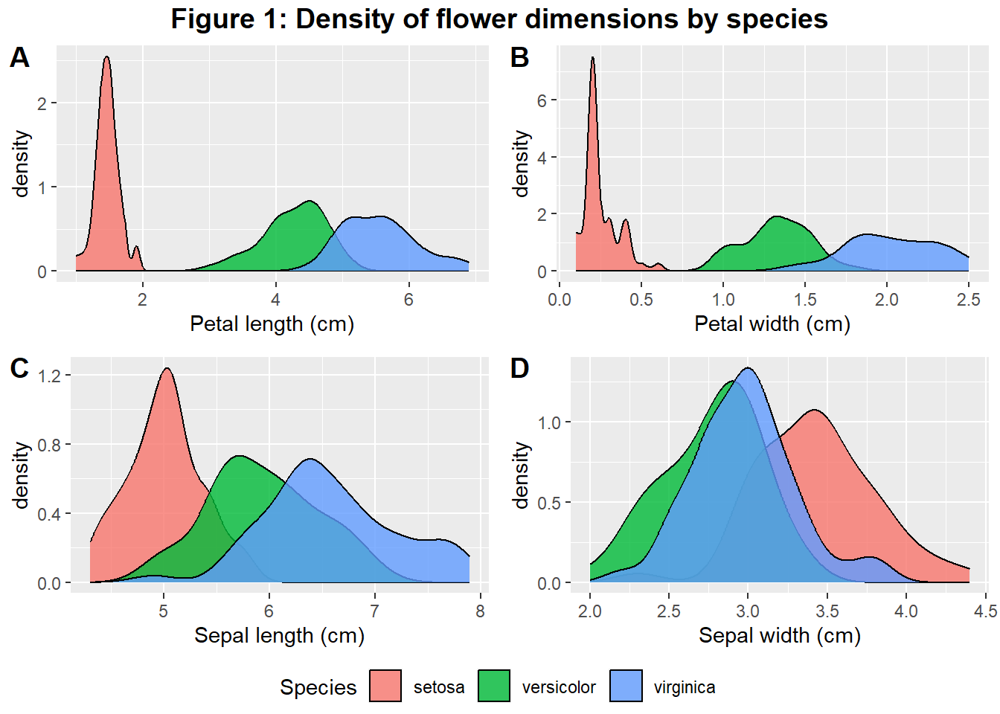
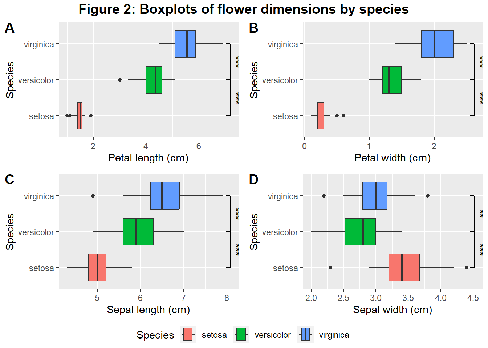
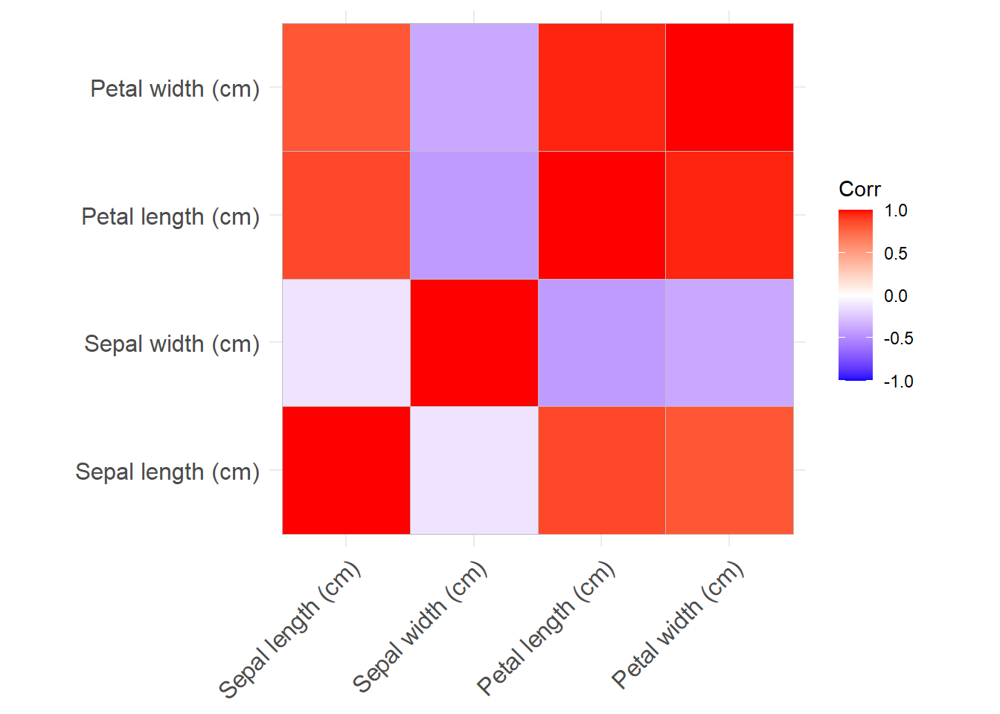
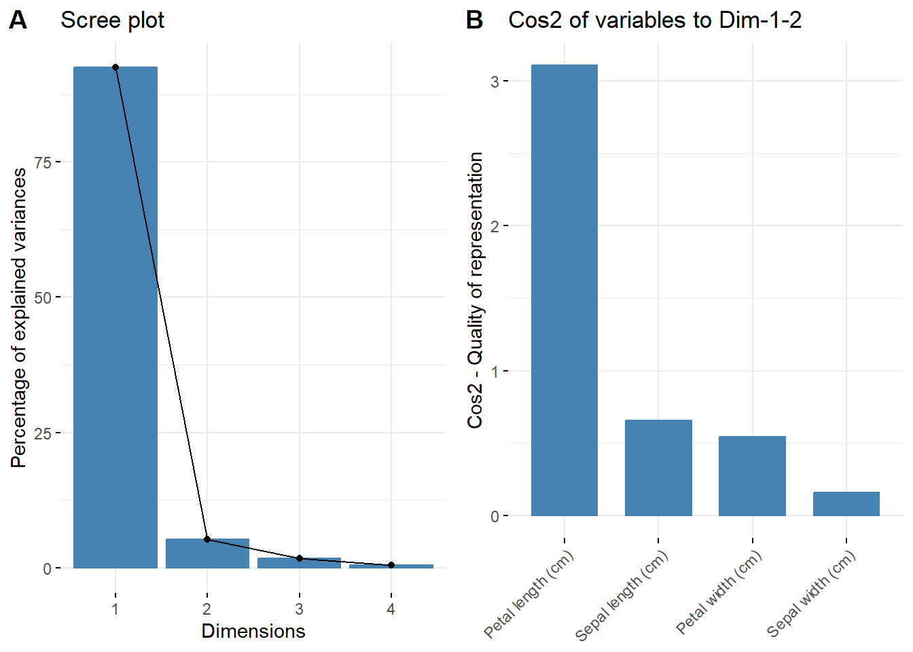
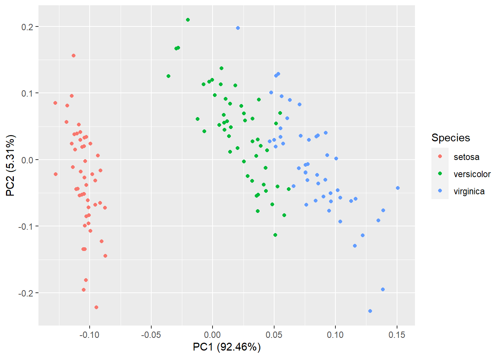
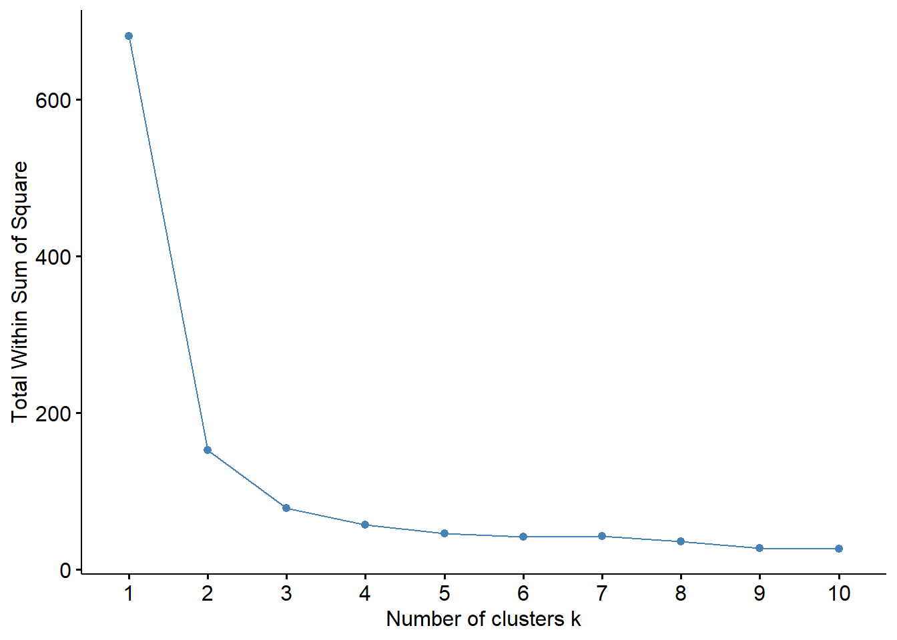
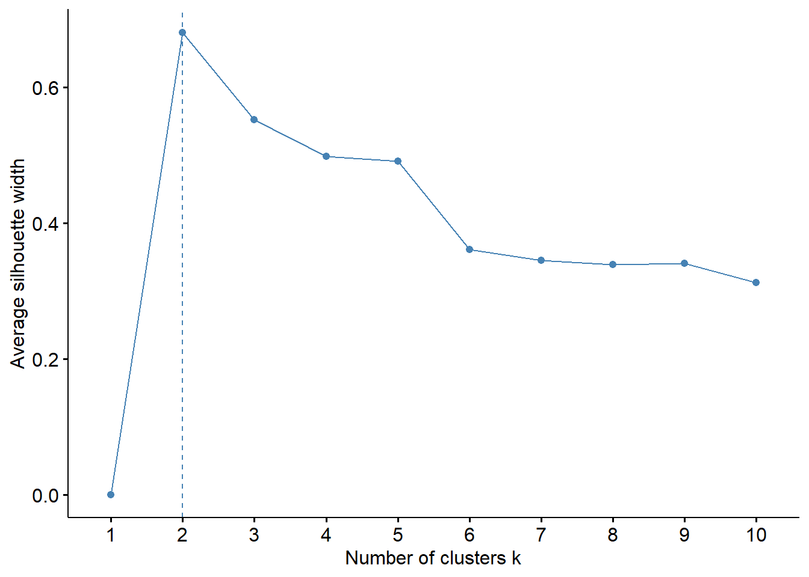
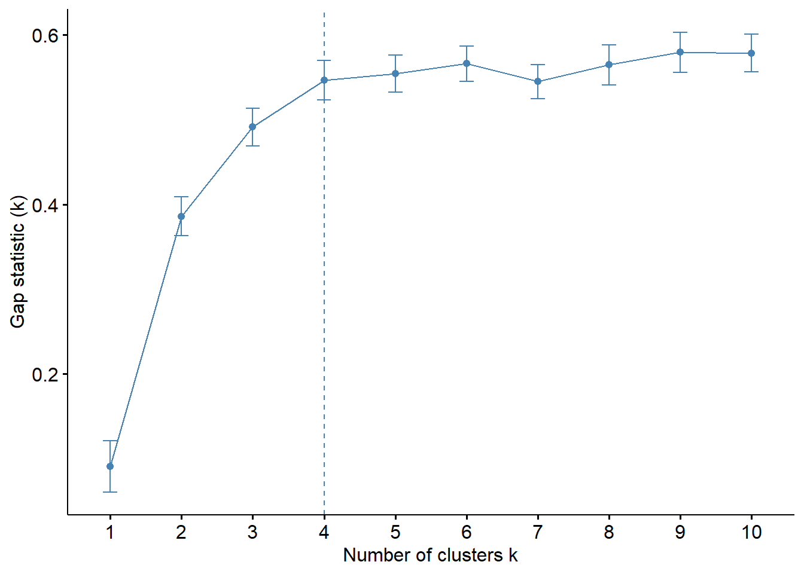
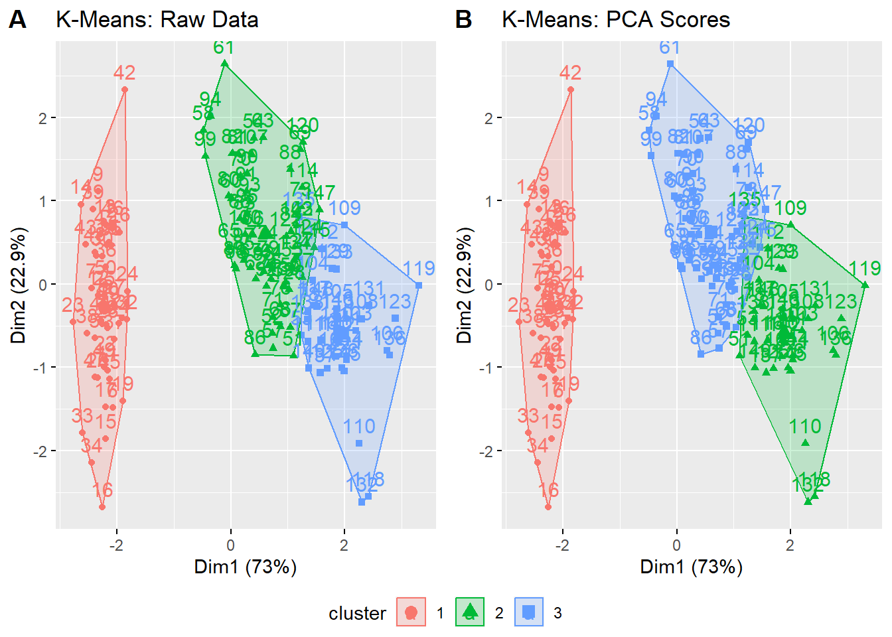

Chapter 2 Unsupervised Learning
2.1 Introduction
Welcome to the Data Science Showcase, in this section we are detailing unsupervised learning and R.
Documentation relating to the decision making and time-management of the development of this code can be found here.
As part of the wider project, we had decided to demonstrate competency with unsupervised learning techniques and with R. The team therefore decided to find an example dataset then tidy and model it using R.
Actions within the team were tracked in the following issues:Sprint DSS-8: Create unsupervised learning model
- DSS-15: Find a compatible data-set ((ShaunLatham?) (GlenArch?))
- DSS-23: Build & train model - K-means ((GlenArch?))
- DSS-56: Build & train model - principal component analysis ((ShaunLatham?))
- DSS-24: Visualize the data & output of models ((ShaunLatham?) (GlenArch?))
2.2 Exploring the data
(ShaunLatham?)
DSS-15: Find a compatible dataset.
The team decided to utilize the iris dataset, which comes built into R.
This dataset is a collection of measurements taken from individuals of three species of the Iris genus; I. setosa, I. versicolor and I. virginica, which are flowers.
Below is a glimpse of the table and a summary of the population sizes and distributions:
## Rows: 150
## Columns: 5
## $ Sepal.Length <dbl> 5.1, 4.9, 4.7, 4.6, 5.0, 5.4, 4.6, 5.0, 4.4, 4.9, 5.4, 4.…
## $ Sepal.Width <dbl> 3.5, 3.0, 3.2, 3.1, 3.6, 3.9, 3.4, 3.4, 2.9, 3.1, 3.7, 3.…
## $ Petal.Length <dbl> 1.4, 1.4, 1.3, 1.5, 1.4, 1.7, 1.4, 1.5, 1.4, 1.5, 1.5, 1.…
## $ Petal.Width <dbl> 0.2, 0.2, 0.2, 0.2, 0.2, 0.4, 0.3, 0.2, 0.2, 0.1, 0.2, 0.…
## $ Species <fct> setosa, setosa, setosa, setosa, setosa, setosa, setosa, s…## Sepal.Length Sepal.Width Petal.Length Petal.Width
## Min. :4.300 Min. :2.000 Min. :1.000 Min. :0.100
## 1st Qu.:5.100 1st Qu.:2.800 1st Qu.:1.600 1st Qu.:0.300
## Median :5.800 Median :3.000 Median :4.350 Median :1.300
## Mean :5.843 Mean :3.057 Mean :3.758 Mean :1.199
## 3rd Qu.:6.400 3rd Qu.:3.300 3rd Qu.:5.100 3rd Qu.:1.800
## Max. :7.900 Max. :4.400 Max. :6.900 Max. :2.500
## Species
## setosa :50
## versicolor:50
## virginica :50
##
##
##
Firstly, it appears the variable names could use some tidying, the values are measured in cm but this is not reflected. The names are corrected below and saved to a new dataframe called ‘data’:
data <- iris %>%
rename("Petal length (cm)" = Petal.Length,
"Petal width (cm)" = Petal.Width,
"Sepal length (cm)" = Sepal.Length,
"Sepal width (cm)" = Sepal.Width)
glimpse(data)## Rows: 150
## Columns: 5
## $ `Sepal length (cm)` <dbl> 5.1, 4.9, 4.7, 4.6, 5.0, 5.4, 4.6, 5.0, 4.4, 4.9, …
## $ `Sepal width (cm)` <dbl> 3.5, 3.0, 3.2, 3.1, 3.6, 3.9, 3.4, 3.4, 2.9, 3.1, …
## $ `Petal length (cm)` <dbl> 1.4, 1.4, 1.3, 1.5, 1.4, 1.7, 1.4, 1.5, 1.4, 1.5, …
## $ `Petal width (cm)` <dbl> 0.2, 0.2, 0.2, 0.2, 0.2, 0.4, 0.3, 0.2, 0.2, 0.1, …
## $ Species <fct> setosa, setosa, setosa, setosa, setosa, setosa, se…
Clearly, from looking at the tables alone, it is not easy to visualize how each species differs for these variables.
Below are distribution plots examining each of the numeric variables:
fig1sub1 <-ggplot(data, aes(x=`Petal length (cm)`, group=Species, fill = Species)) +
geom_density(alpha=0.8)
fig1sub2<- ggplot(data, aes(x=`Petal width (cm)`, group=Species, fill = Species)) +
geom_density(alpha=0.8, show.legend=FALSE)
fig1sub3 <- ggplot(data, aes(x=`Sepal length (cm)`, group=Species, fill = Species)) +
geom_density(alpha=0.8, show.legend=FALSE)
fig1sub4 <- ggplot(data, aes(x=`Sepal width (cm)`, group=Species, fill = Species)) +
geom_density(alpha=0.8, show.legend=FALSE)
figure <- ggarrange(fig1sub1, fig1sub2, fig1sub3, fig1sub4,
labels = c("A", "B", "C", "D"),
ncol = 2, nrow = 2,
common.legend = TRUE,
legend = "bottom")
annotate_figure(figure, top = text_grob("Figure 1: Density of flower dimensions by species",face="bold",size=14))
Alternatively, the data can be visualized as boxplots, indicating which variables are significantly different between species:
fig2sub1 <- ggplot(data, aes(x=`Petal length (cm)`, y=Species, fill=Species)) + geom_boxplot() +
geom_signif(comparisons = list(c("versicolor", "virginica"),
c("setosa","versicolor")),
map_signif_level=TRUE)
fig2sub2 <- ggplot(data, aes(x=`Petal width (cm)`, y=Species, fill=Species)) +
geom_boxplot() +
geom_signif(comparisons = list(c("versicolor", "virginica"),
c("setosa","versicolor")),
map_signif_level=TRUE)
fig2sub3 <- ggplot(data, aes(x=`Sepal length (cm)`, y=Species, fill=Species)) + geom_boxplot() +
geom_signif(comparisons = list(c("versicolor", "virginica"),
c("setosa","versicolor")),
map_signif_level=TRUE)
fig2sub4 <- ggplot(data, aes(x=`Sepal width (cm)`, y=Species, fill=Species)) +
geom_boxplot() + geom_signif(comparisons = list(c("versicolor", "virginica"),
c("setosa","versicolor")),
map_signif_level=TRUE)
figure <- ggarrange(fig2sub1, fig2sub2, fig2sub3, fig2sub4,
labels = c("A", "B", "C", "D"),
ncol = 2, nrow = 2,
common.legend = TRUE,
legend = "bottom")
annotate_figure(figure, top = text_grob("Figure 2: Boxplots of flower dimensions by species",face="bold",size=14))
2.3 Analysis by unsupervised learning techniques
2.3.1 3.1 Principal Component Analysis
(ShaunLatham?)
DSS-56: Build & train model - principal component analysis:
While PCA is normally used in situations where variance is contained across many variables, it can also be used to reduce the four dimensions of our Iris dataset to explain variance across a few eigenvectors through the data.
Below, a covariance matrix is visualized and PCA is performed on the data; a summary of the proportion of variance explained by each eigenvector:
 It can be seen from the Scree plot that 92.46% of variance in the dataset is explained in the fist principal component with an additional 5.30% from the second principal component. As such, the variance of the dataset can be effectively modelled in two dimensions rather than four.
## Importance of components:
## PC1 PC2 PC3 PC4
## Standard deviation 2.0563 0.49262 0.2797 0.15439
## Proportion of Variance 0.9246 0.05307 0.0171 0.00521
## Cumulative Proportion 0.9246 0.97769 0.9948 1.00000fig3sub1 <- fviz_eig(data.pca, add_labels=TRUE)
fig3sub2 <- fviz_cos2(data.pca, choice = "var", axes = 1:2)
#fig3sub3 <- fviz_pca(data.pca)
figure3 <- ggarrange(fig3sub1, fig3sub2,
labels = c("A", "B"),
ncol = 2,
common.legend = TRUE,
legend = "bottom")
figure3
Below is a plot of sample scores for PC1, PC2 & PC3 coloured by species. It is clear that each species presents its own cluster, though there is some overlap between the I. versicolor and I. virginica clusters.

mycolors <- c('orange', 'green', 'blue')
data$color <- mycolors[ as.numeric(data$Species) ]
fig4sub2 <- plot3d(data.pca$x[,1], xlab='PC1 (Rx^2 = 0.92)',
data.pca$x[,2], ylab='PC2 (Rx^2 = 0.05)',
data.pca$x[,3], zlab='PC3 (Rx^2 = 0.01)',
col = data$color)
#rglwidget()
fig4sub22.3.2 K-Means Analysis
DSS-23: Build & train model - K-means:
#Load the data into the dataframe
df <- iris
#Remove any missing values
df <- na.omit(df)
#Remove the species column from the dataset
df_iris <- df
df <- df[-c(5)]
#Scale all of the values from 0 to 1
#df <- scale(df)
km <- kmeans(df, 3, 100)
km.pca <- kmeans(data.pca$x[,1:2],3,100)


fig6sub1 <- fviz_cluster(km, df)+labs(title = "K-Means: Raw Data")
fig6sub2 <- fviz_cluster(km.pca, df)+labs(title = "K-Means: PCA Scores")
figure6 <- ggarrange(fig6sub1, fig6sub2,
labels = c("A", "B"),
ncol = 2,
common.legend = TRUE,
legend = "bottom")
figure6
cluster_species <- km.pca$cluster
cluster_species <- recode(cluster_species,
"1" = "virginica",
"2" = "versicolor",
"3" = "setosa")
data$cluster_species <- cluster_species
confusionMatrix(data = factor(data$Species), reference = factor(data$cluster_species))## Confusion Matrix and Statistics
##
## Reference
## Prediction setosa versicolor virginica
## setosa 0 0 50
## versicolor 47 3 0
## virginica 14 36 0
##
## Overall Statistics
##
## Accuracy : 0.02
## 95% CI : (0.0041, 0.0573)
## No Information Rate : 0.4067
## P-Value [Acc > NIR] : 1
##
## Kappa : -0.47
##
## Mcnemar's Test P-Value : <2e-16
##
## Statistics by Class:
##
## Class: setosa Class: versicolor Class: virginica
## Sensitivity 0.0000 0.07692 0.0000
## Specificity 0.4382 0.57658 0.5000
## Pos Pred Value 0.0000 0.06000 0.0000
## Neg Pred Value 0.3900 0.64000 0.5000
## Prevalence 0.4067 0.26000 0.3333
## Detection Rate 0.0000 0.02000 0.0000
## Detection Prevalence 0.3333 0.33333 0.3333
## Balanced Accuracy 0.2191 0.32675 0.25002.4 Predict a species
Having explored the data and analysed it by PCA and K-Means, the authors would like to demonstrate the predictive potential of these algorithms. While other supervised learning techniques would be more appropriate for this application, this chapter on unsupervised learning is the only chapter we intend to develop in R; therefore, this is the only opportunity to showcase the interactive R Shiny elements displayed below.
Take some time to input some measurements of your own and see which species your flower is likely to be:
knitr::include_url("https://shaun-m-latham.shinyapps.io/data_science_showcase_unsupervised_learning/", height="600px")#Function to predict cluster from unknown.
kmeans_predictor <- function(data,PetalLength,PetalWidth,SepalLength,SepalWidth){
test_data <- array(c(PetalLength,PetalWidth,SepalLength,SepalWidth), dim=c(1,4))
model <- kmeans(data[,1:4],3,nstart=25)
prediction <- cl_predict(model, test_data)
return(prediction)
}
#App to input flower dimensions and predict species.
shinyApp(
ui = fluidPage(
titlePanel("Predict Species"),
sidebarLayout(
sidebarPanel(
numericInput("PetalLength", "Petal length (cm):", 0, min = 0, max = 10),
numericInput("PetalWidth", "Petal width (cm):", 0, min = 0, max = 10),
numericInput("SepalLength", "Sepal length (cm):", 0, min = 0, max = 10),
numericInput("SepalWidth", "Sepal width (cm):", 0, min = 0, max = 10),
actionButton("submit","Submit")),
mainPanel(
textOutput("prediction"),
imageOutput('plot3'))
)),
server = function(input, output) {
output$plot3 <- renderImage({
# When input$n is 1, filename is ./images/image1.jpeg
filename <- normalizePath(file.path('./',
paste('silly-dog', '.png', sep='')))
# Return a list containing the filename
list(src = filename)
}, deleteFile = FALSE)
calculate <- eventReactive(input$submit,{kmeans_predictor(data,
input$PetalLength,
input$PetalWidth,
input$SepalLength,
input$SepalWidth)})
output$prediction <- renderText(calculate())
},
options = list(height = 500)
)